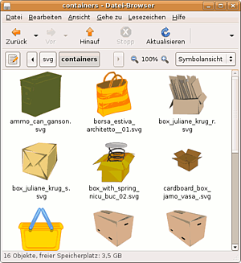

Openclipart
Dieser Artikel wurde für die folgenden Ubuntu-Versionen getestet:
Ubuntu 14.04 Trusty Tahr
Zum Verständnis dieses Artikels sind folgende Seiten hilfreich:
Die Open Clip Art Library  ist eine Sammlung von Cliparts, also Bildern und Grafiken. Alle Cliparts stehen unter der Lizenz Creative Commons Public Domain , d.h. alle dürfen ohne Ansprüche des Erstellers für alle Zwecke frei genutzt werden.
ist eine Sammlung von Cliparts, also Bildern und Grafiken. Alle Cliparts stehen unter der Lizenz Creative Commons Public Domain , d.h. alle dürfen ohne Ansprüche des Erstellers für alle Zwecke frei genutzt werden.
Die Cliparts können über die Homepage der Open Clip Art Library angezeigt und heruntergeladen werden. Arbeitet man öfters unterwegs oder ohne einen Internetzugang, so ist es praktisch, alle Cliparts auf dem Rechner installiert zu haben. Dies lässt sich über die Paketverwaltung einfach bewerkstelligen.
Wer dagegen Symbole (Icons) aller Art für den Desktop oder zur Erstellung von Webseiten benötigt, sollte sich in der Open Icon Library umschauen.

Installation¶
Um alle Komponenten der Open Clipart Library zu installieren [1], wählt man das Metapaket:
openclipart (universe)
 mit apturl
mit apturl
Paketliste zum Kopieren:
sudo apt-get install openclipart
sudo aptitude install openclipart
Oder man installiert die Einzelpakete. Diese enthalten die Cliparts im PNG-Format, als SVG-Vektorgraphik und die Einbindung der Cliparts in die Galerie von LibreOffice:
openclipart-png (universe, 160 MiB, installiert 200 MiB)
mit apturl
Paketliste zum Kopieren:
sudo apt-get install openclipart-png
sudo aptitude install openclipart-png
openclipart-svg (universe, 40 MiB, installiert 185 MiB)
mit apturl
Paketliste zum Kopieren:
sudo apt-get install openclipart-svg
sudo aptitude install openclipart-svg
openclipart-libreoffice (universe, 8, 5MiB, installiert 10 MiB)
mit apturl
Paketliste zum Kopieren:
sudo apt-get install openclipart-libreoffice
sudo aptitude install openclipart-libreoffice
Speziell für Benutzer der Desktop-Oberfläche Unity ist das Paket unity-scope-openclipart interessant, das eine Suchfunktion (Lens) enthält.
Cliparts finden¶
Sind die Pakete installiert, so findet man die Cliparts unter
/usr/share/openclipart/png/
bzw.
/usr/share/openclipart/svg/
Dort können sie mit jedem Bildbetrachter oder Dateimanager angesehen werden. Wer häufiger auf die Bibliothek zugreift, legt sich am besten in seinem Homeverzeichnis einen symbolischen Link an. Beispiel:
ln -s /usr/share/openclipart ~/Clipart
Openoffice.org¶
In Openoffice.org bzw. LibreOffice findet man die Cliparts, indem man im "Extras"-Menü den Punkt "Gallery" aktiviert.
Links¶
Cliparts
- verschiedene Erweiterungen für OpenofficeOxygenOffice Extra
- Erweiterung für Openoffice
- Erstellt mit Inyoka
-
 2004 – 2017 ubuntuusers.de • Einige Rechte vorbehalten
2004 – 2017 ubuntuusers.de • Einige Rechte vorbehalten
Lizenz • Kontakt • Datenschutz • Impressum • Serverstatus -
Serverhousing gespendet von